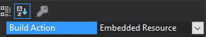

Loading Assets
Assets are resources imported into the game besides the dll file holding our plugin code. They can be images, localization files or complete asset bundles exported from Unity to import into the game. There are two different ways of loading your assets, commonly known as side loaded and embedded.
Note: The code snippets are taken from our example mod.
Side loading
Side loading would be where the assets are packaged alongside your plugin.dll.
You may have noticed that we include a postbuild command into the example mod to copy the Assets directory into the games plugin directory.
Although this allows for easy development iteration though being able to change assets without recompilation, it is not so easily distributable to users, and must be packaged side by side with your released plugin, and exposes your assets to being directly modified by the user.
The example mod's post build action is a simple XCOPY command: <Exec Command="xcopy "$(ProjectDir)Assets" "$(VALHEIM_INSTALL)\BepInEx\plugins\JotunnModExample\Assets\" /S /Y" />
Embedded resource
Another option is to embed our resources inside the binary itself. You may do this by right clicking a folder inside of your project, and add an existing item. Once it has been added, right click the item, select properties, and set the build action to embedded resource:

Referencing our assets
In order to load our resources, we can utilise Jötunn's AssetUtils helper methods, such as LoadTexture, LoadAssetBundle, LoadAssetBundleFromResources. The method below showcases a number of ways to load your assets into various forms of objects.
private void LoadAssets()
{
// path to the folder where the mod dll is located
string modPath = Path.GetDirectoryName(Info.Location);
// Load texture from filesystem
TestTex = AssetUtils.LoadTexture(Path.Combine(modPath, "Assets/test_tex.jpg"));
TestSprite = Sprite.Create(TestTex, new Rect(0f, 0f, TestTex.width, TestTex.height), Vector2.zero);
// Load asset bundle from filesystem
TestAssets = AssetUtils.LoadAssetBundle(Path.Combine(modPath, "Assets/jotunnlibtest"));
Jotunn.Logger.LogInfo(TestAssets);
// Print Embedded Resources
Jotunn.Logger.LogInfo($"Embedded resources: {string.Join(", ", typeof(JotunnModExample).Assembly.GetManifestResourceNames())}");
// Load asset bundles from embedded resources
EmbeddedResourceBundle = AssetUtils.LoadAssetBundleFromResources("eviesbackpacks");
BackpackPrefab = EmbeddedResourceBundle.LoadAsset<GameObject>("CapeSilverBackpack");
}